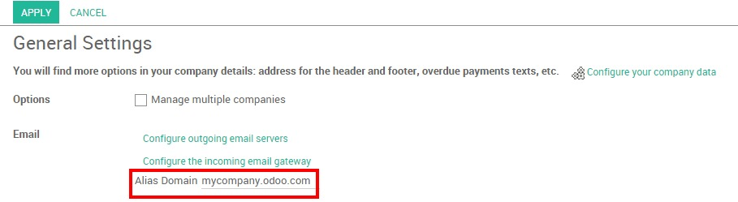

There are several ways for your company to generate leads with Odoo CRM. One of them is using your company's generic email address as a trigger to create a new lead in the system. In Odoo, each one of your sales teams is linked to its own email address from which prospects can reach them. For example, if the personal email address of your Direct team is direct@mycompany.example.com, every email sent will automatically create a new opportunity into the sales team.
Configuration
The first thing you need to do is to configure your outgoing email servers and incoming email gateway from the .
Then set up your alias domain from the field shown here below and click on Apply.
Set up team alias
Go on the Sales module and click on Dashboard. You will see that the activation of your domain alias has generated a default email alias for your existing sales teams.

You can easily personalize your sales teams aliases. Click on the More button from the sales team of your choice, then on Settings to access the sales team form. From the Email Alias field, enter your email alias and click on Save. Make sure to allow receiving emails from everyone.
From there, each email sent to this email address will generate a new lead into the related sales team.

Set up catch-all email domain
Additionally to your sales team aliases, you can also create a generic email alias (e.g. contact@ or info@ ) that will also generate a new contact in Odoo CRM. Still from the Sales module, go to and set up your catch-all email domain.
Tip
You can choose whether the contacts generated from your catch-all email become leads or opportunities using the radio buttons that you see on the screenshot here below. Note that, by default, the lead stage is not activated in Odoo CRM.

See also